Film
Tutti i nostri articoli sui film: recensioni senza spoiler, curiosità dal set e finali spiegati. Filtra per genere, anno di uscita e dove vederli.
Tutti gli articoli

Pulp Fiction, Ezechiele 25:17: è nella Bibbia? (spoiler)
Il versetto che Jules recita prima di sparare è quasi tutto inventato: ecco cosa dice davvero la Bibbia in italiano, da quale film di karate arriva e perché alla fine cambia significato

Ragione e sentimento (2026): recensione del film di Oakley
Un Austen sporco di fango che guadagna le sorelle ma perde Edward, e per questo divide la critica
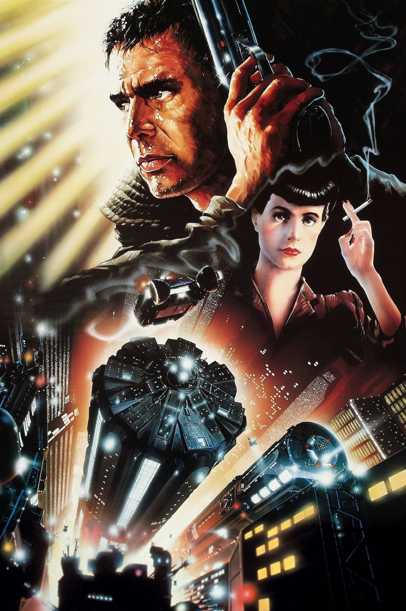
Blade Runner, «lacrime nella pioggia» (spoiler)
Una scena che vale per quello che toglie: cosa dice il monologo di Roy Batty in italiano, cosa tagliò Rutger Hauer e cosa cambia tra doppiaggio e originale
Al cinema dal 29 ottobre: i film in uscita
Un gelataio che trasforma i bambini in assassini, un frate del Seicento con Favino e il ritorno di Dracula in 4K: la settimana di Halloween in sala, con il nostro giudizio d'attesa
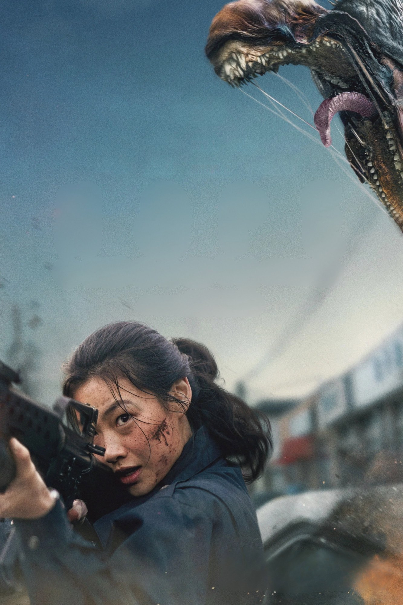
Hope di Na Hong-jin: quando esce, trama e cast
Dal 5 novembre in sala con MUBI il thriller di fantascienza che ha portato un regista coreano in concorso a Cannes: una tigre vicino al confine, Fassbender e Vikander nel cast
Godzilla Minus Zero: quando esce e cosa sappiamo
Dal 5 novembre al cinema il sequel di Minus One: Yamazaki torna alla regia, il budget cresce e per la prima volta un film giapponese è girato per IMAX

Gli Incredibili (2004): perfetto fino all'isola
Un padre stretto nel suo cubicolo e un mantello che uccide: il film Pixar del 2004 resta il miglior film di supereroi sul tempo che passa
Paprika compie 20 anni: 6 curiosità sul film di Satoshi Kon
Un progetto fermo per anni, un romanzo del 1993, una colonna sonora che usa la voce sintetica e un incasso che non racconta l'influenza del film: Paprika raccontato da dietro le quinte

Wildwood: il film Laika da 100 milioni che la critica adora
Stop-motion lunga più di due ore, un bosco segreto oltre Portland e una critica quasi unanime. Il problema, per Laika, sono i biglietti.

Iron Man (2008): perché funziona ancora
Un protagonista che parla sopra le battute e un regista che lo lascia improvvisare: il film del 2008 regge perché racconta un uomo prima di un universo
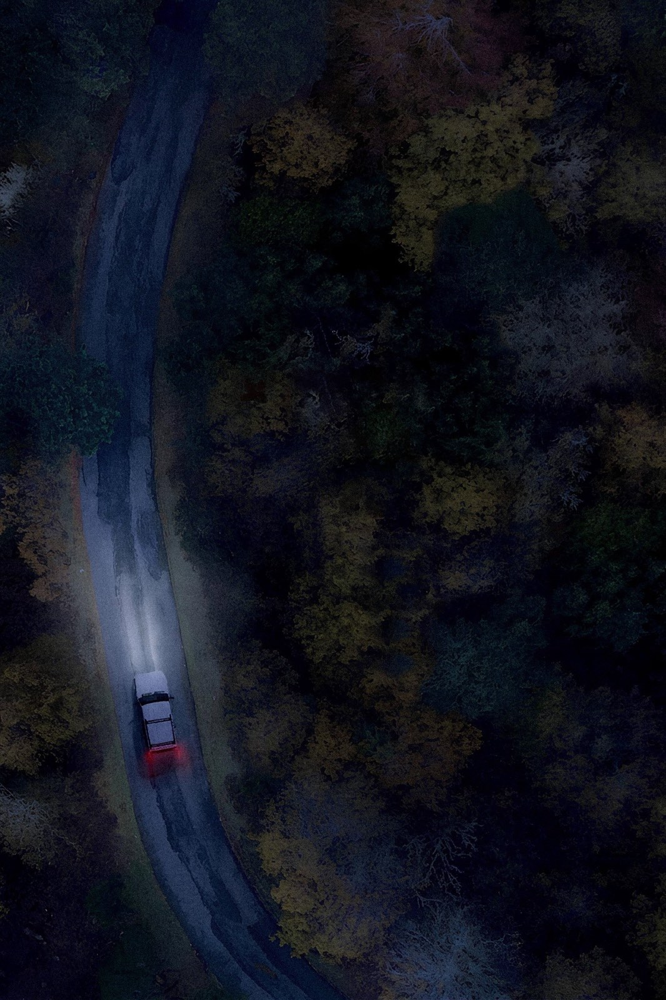
It Ends: quando esce e cosa sapere prima
Quattro amici, una strada nel bosco che non finisce mai e un budget di 30.000 dollari: l'horror che negli Stati Uniti ha convinto la critica arriva in sala il 28 ottobre
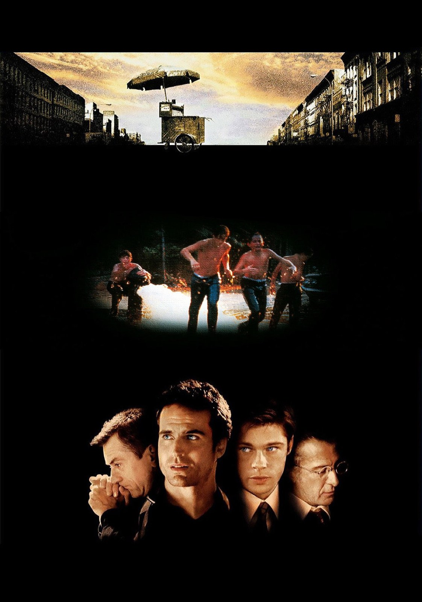
Sleepers compie 30 anni: 6 curiosità sul film di Levinson
Una storia vera che il suo stesso autore ha poi ridimensionato, un cast con Brad Pitt, De Niro e Hoffman, un riformatorio girato in Connecticut e un'unica candidatura all'Oscar: Sleepers visto da dietro le quinte

Clayface: recensione del body horror DC
Un supereroe DC girato come La mosca: il corpo che si scioglie funziona, il personaggio che lo abita molto meno

L'appartamento (1960), la commedia d'ufficio senza età
Cinque Oscar, un budget di 3 milioni e una commedia sul lavoro che fa ancora un po' male: il film di Billy Wilder, rivisto con occhi nuovi

Quei bravi ragazzi (GoodFellas), rivisto oggi
Un gangster vero pagato 480.000 dollari per raccontarsi, sei candidature all'Oscar e un Leone d'argento: perché il film di Scorsese regge ancora

Fast & Furious 5 (2011): la recensione
Dal garage alla rapina di Rio: perché il quinto capitolo, con Dwayne Johnson e un caveau trascinato per la città, resta il più compatto della serie

Forrest Gump (1994): ancora un capolavoro?
Sei Oscar, 678 milioni di dollari e un attore che rinunciò al cachet: cosa regge e cosa no del film di Zemeckis, trent'anni dopo
Hunger Games - L'alba sulla mietitura: quando esce
Dal 19 novembre al cinema il prequel su Haymitch: 48 tributi, Francis Lawrence alla regia e un romanzo che ha battuto ogni record della saga

L'isola dei ricordi (Forgotten Island)
Due amiche attraversano un portale e finiscono nel folklore delle Filippine: la critica premia il film DreamWorks, ma il botteghino non ha seguito i consensi

La vita è meravigliosa (1946): perché regge ancora
Il classico di Natale che nel 1947 fece perdere soldi allo studio. Eppure Capra e Stewart oggi ci sembrano più amari e più veri di quanto si pensi
Saw III compie 20 anni: 6 curiosità sul film
Un pranzo dopo un lutto, larve fissate con il miele, sette tagli per evitare il divieto e un esordio che a Halloween nessuno aveva mai visto

Whalefall - Nella balena
Un ragazzo inghiottito da un capodoglio con un'ora di ossigeno: il survival di Brian Duffield convince quando resta nel buio, però perde fiato quando torna indietro nel tempo
Babel compie 20 anni: 6 curiosità sul film
Quattro paesi, sei lingue, quattro formati di ripresa e una lite tra regista e sceneggiatore che finì con un divieto d'ingresso a Cannes

Street Fighter
Il picchiaduro di Capcom arriva in sala con tanta energia e un affetto evidente per il gioco, ma i critici si fermano a sceneggiatura e finale

Tenet: la trama e il finale spiegati (spoiler)
Un oggetto che viaggia all'indietro, una battaglia in due direzioni e un amico che sapeva già tutto: come si rimettono in fila i pezzi del film di Christopher Nolan

Il sesto senso, il finale spiegato (spoiler)
Perché Malcolm non si accorge di essere morto e dove Shyamalan ha nascosto la verità fin dalla prima scena
Moonlight compie 10 anni: 6 curiosità sul film
Tre attori che non si sono mai incontrati sul set, 25 giorni di riprese nel quartiere dove il regista è cresciuto e una busta sbagliata che ha reso la notte degli Oscar 2017 una leggenda

Mulholland Drive: il significato spiegato (spoiler)
Un pilota televisivo bocciato, un secondo film girato a posteriori e una chiave blu: come leggere il capolavoro di David Lynch

Interstellar, il finale spiegato (spoiler)
Il buco nero, la libreria e l'orologio: cosa succede a Cooper negli ultimi quaranta minuti del film di Nolan e cosa è scienza e cosa invenzione
Primetime: quando esce, trama, cast e cosa sappiamo
Dal 15 ottobre in sala il film con Robert Pattinson sul programma To Catch a Predator: da Venezia a una storia vera che ha diviso l'America

The Social Reckoning, recensione: Sorkin sotto accusa
Il ritorno di Aaron Sorkin a Facebook, questa volta anche dietro la macchina da presa, divide la critica: ecco cosa dicono le recensioni e per chi vale il biglietto

Inception, il finale spiegato (spoiler)
Sedici anni dopo, l'ultima inquadratura di Nolan divide ancora: cosa dicono davvero il regista, la produttrice e Michael Caine

L'estranea, la recensione: Strippoli fa paura in famiglia
Una madre bussa alla porta della figlia dopo ventisette anni e porta con sé un patto. Il film italiano scelto per gli Oscar è un thriller di famiglia che fa paura senza alzare la voce: andateci al buio

Mammina
Una madre, il suo doppio e una casa sola: l'horror di Rob Savage parte da un'idea forte, ma la critica internazionale è severa

Shutter Island, il finale spiegato (spoiler)
La frase finale di DiCaprio ha due letture opposte, entrambe sostenute da chi il film l'ha costruito: ecco quale scegliamo noi
Whalefall: quando esce, trama, cast e cosa sappiamo
Dal 15 ottobre in sala il thriller di sopravvivenza di Brian Duffield: un sub inghiottito da un capodoglio, un'ora di ossigeno e il romanzo di Daniel Kraus
Al cinema dall'8 ottobre: i film in uscita
Un thriller sul caso Facebook, un horror con Jessica Chastain e quattro titoli italiani: le uscite della settimana, con il nostro giudizio d'attesa
Ryan Coogler: da Fruitvale Station a Sinners
Un budget di 900 mila dollari, un miliardo e 350 milioni di incasso e un contratto che gli restituirà il film: come il regista di Oakland si è preso Hollywood

The Social Reckoning: 6 cose da sapere
Aaron Sorkin torna a Facebook sedici anni dopo The Social Network, ma stavolta dirige: dal titolo cambiato alla storia vera di Frances Haugen, tutto ciò che conta prima della sala
The Social: cosa c'è di vero nel film di Sorkin
Dall'8 ottobre in sala il seguito di The Social Network: Aaron Sorkin passa alla regia e racconta la talpa di Facebook, Frances Haugen, e il giornalista che ha trasformato le sue carte in un caso mondiale
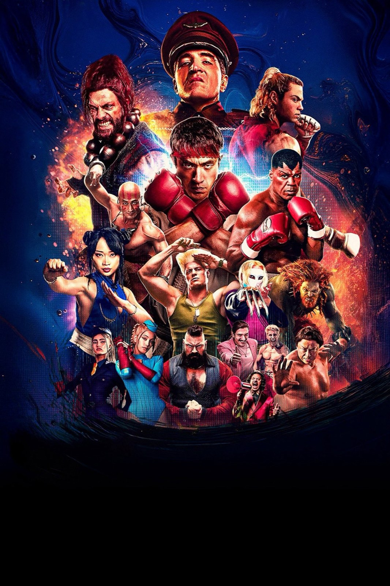
Street Fighter: quando esce, trama, cast e cosa sappiamo
Dal 15 ottobre in sala il nuovo film tratto dal videogioco Capcom: Ryu e Ken tornano al torneo, tra Noah Centineo, Jason Momoa e 50 Cent
Clayface: quando esce, trama, cast e cosa sappiamo
L'horror DC di James Watkins arriva in sala il 22 ottobre: la storia di Matt Hagen, un'idea di Mike Flanagan e un cast che arriva dal cinema inglese
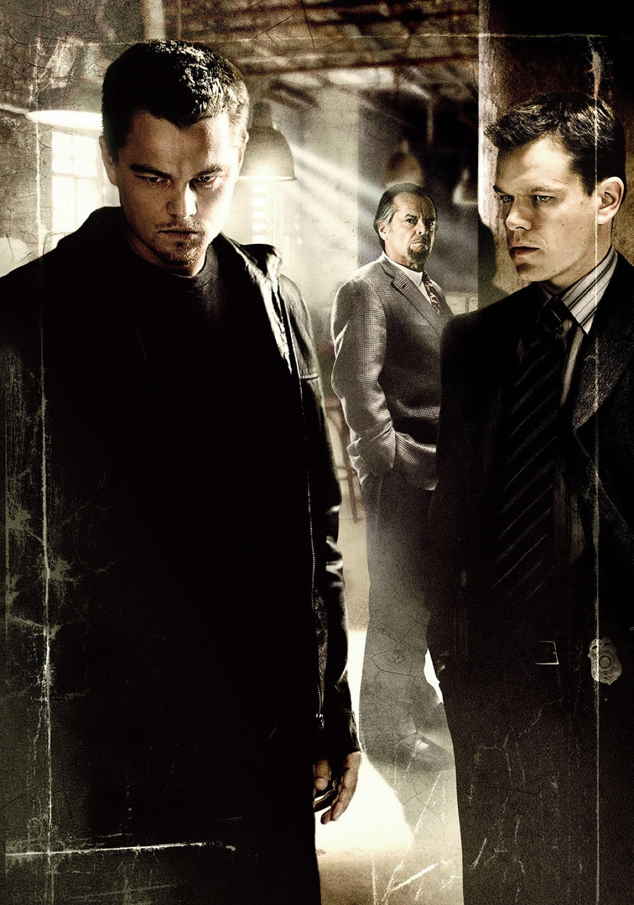
The Departed compie 20 anni: 6 curiosità
Un remake di Hong Kong comprato per 1,75 milioni di dollari, un boss ispirato a un criminale reale, Boston girata soprattutto a New York e l'Oscar che Scorsese aspettava da una vita: il film che ha cambiato la carriera del suo regista, visto da dietro le quinte

Verity
Il bestseller di Colleen Hoover diventa un thriller patinato con un gran cast, ma la suspense resta sulla pagina

Heart of the Beast
Brad Pitt, un cane da guerra e 58 miglia di Alaska: un survival che vale più per il legame che per il pericolo

One Battle After Another e Pynchon: cosa resta di Vineland
Vent'anni di tentativi, un romanzo pieno di digressioni e un film che ne ha preso solo ciò che serviva: la strada di Paul Thomas Anderson da Vineland a Oscar 2026
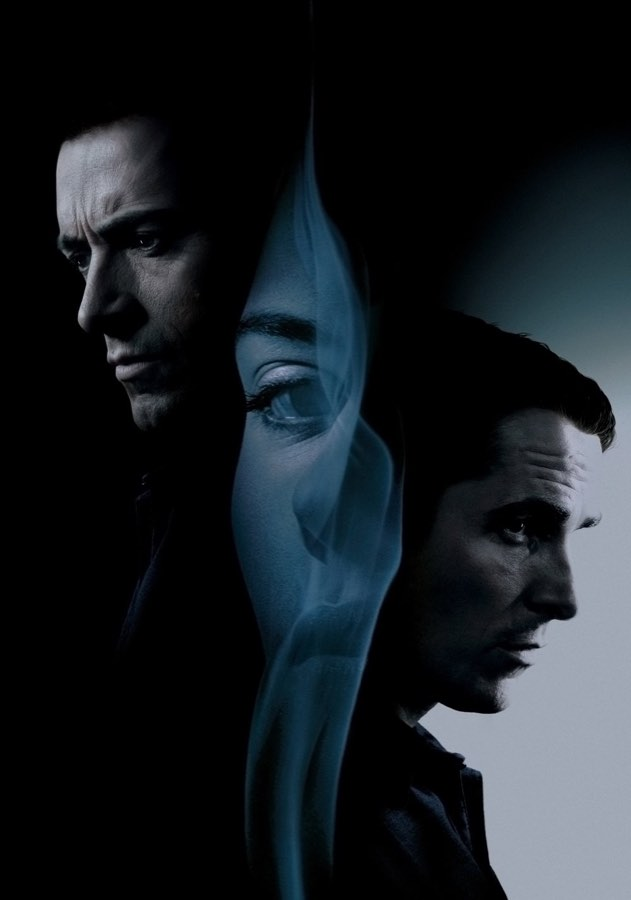
The Prestige compie 20 anni: 6 curiosità
David Bowie convinto di persona, cinque anni di sceneggiatura, una Londra vittoriana ricostruita a Los Angeles e due Oscar persi contro lo stesso film: il trucco meglio riuscito di Christopher Nolan, visto da dietro le quinte
Film usciti al cinema a settembre 2026: i più interessanti
Dal Resident Evil di Zach Cregger al Brad Pitt di Heart of the Beast, passando per Silent Friend e la reunion degli Oasis: il mese in sala, film per film

Verity: perché tutti parlano del thriller con Anne Hathaway
Un romanzo nato come autopubblicazione, una scrittrice spinta da BookTok, due star e una critica tiepida: cosa c'è dietro il caso della settimana

Digger
Un Tom Cruise mai visto in una satira enorme, sfacciata e divisiva: il Dr. Strangelove della crisi climatica
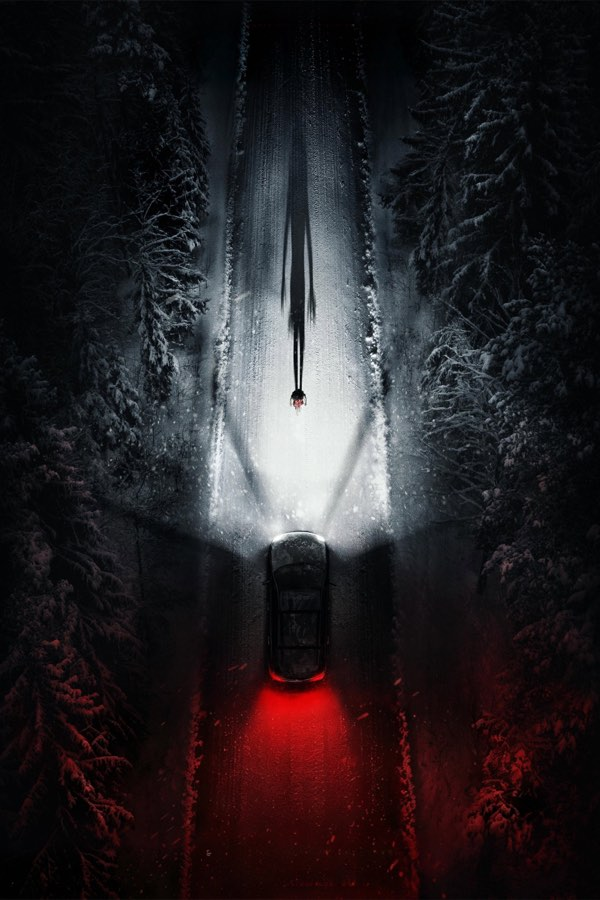
Resident Evil di Zach Cregger: 7 curiosità
Un regista che non aveva mai visto i vecchi film, battute tagliate perché faceva troppo ridere e un record su Rotten Tomatoes
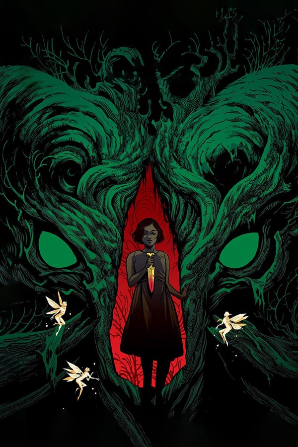
Il labirinto del fauno compie 20 anni: 8 curiosità
Un quaderno dimenticato in taxi, un attore che imparò lo spagnolo sotto il trucco e uno Stephen King che si contorceva sulla poltrona

Resident Evil
Un corriere, una notte a Raccoon City e un horror che ride di sé: Cregger smonta la saga, ma non tutti ridono con lui

Silent Friend
Un albero, tre epoche e un Tony Leung in stato di grazia: il film più insolito dell'anno è un invito a guardare il mondo da un'altra prospettiva

Coyote vs. Acme: i Looney Tunes vanno in tribunale
Un film chiuso in un cassetto e salvato dai fan: la causa di Willy il Coyote contro la Acme è una commedia legale più intelligente di quanto prometta.

The Odyssey
Nolan porta in sala il viaggio di Ulisse con Matt Damon, Tom Holland e Anne Hathaway: un kolossal girato interamente in IMAX 70mm, ambizioso e spesso spettacolare

Disclosure Day: la recensione del film di Spielberg
Spielberg torna alla fantascienza con Emily Blunt protagonista: un thriller di inseguimenti che vuole anche commuovere, e ci riesce solo a tratti

Obsession
Un desiderio esaudito, una ragazza che non ti lascia più andare: l'esordio dello youtuber Curry Barker è l'horror più disturbante (e divertente) della stagione

Michael
Jaafar Jackson è un'apparizione, i concerti fanno venire i brividi. Peccato che il film di Antoine Fuqua racconti solo metà della storia

Michael: 6 curiosità sul film su Michael Jackson
Un nipote scelto dopo due anni di provini, una clausola legale che ha costretto a rifare il finale, uscite spostate più volte e un incasso da oltre un miliardo: il biopic di Antoine Fuqua visto da dietro le quinte, senza anticipare la trama

Super Mario Galaxy – Il film
Mario e Luigi volano nello spazio per salvare Rosalina: l'animazione è splendida e il botteghino gli ha dato ragione, ma la storia resta una semplice successione di mondi

Project Hail Mary
Lord e Miller portano al cinema il romanzo di Andy Weir: hard sci-fi per tutti, un Gosling in stato di grazia e un alieno che ruba la scena
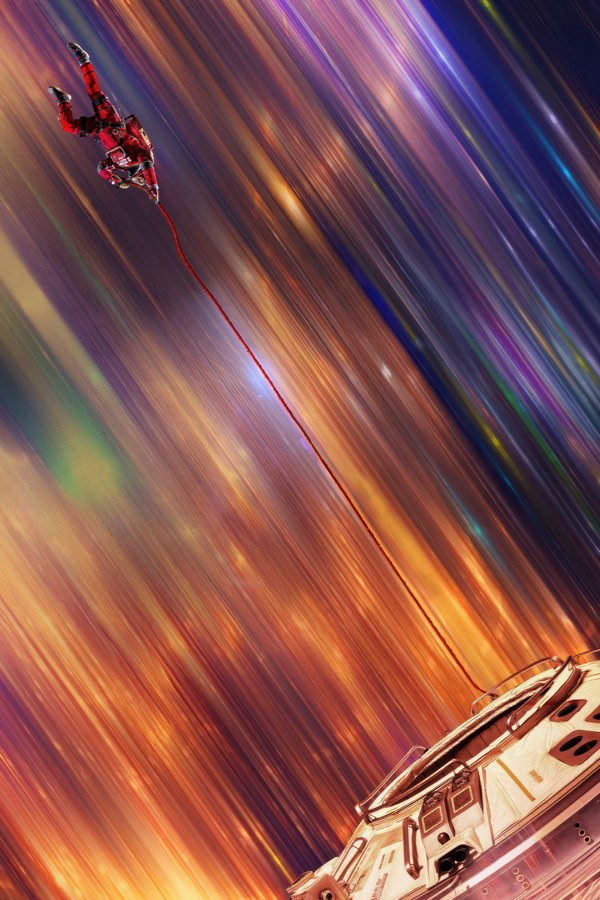
Project Hail Mary: 6 curiosità sul film con Gosling
Il pupazzo di Rocky, una nave spaziale costruita davvero e un contratto firmato un anno prima dell'uscita del libro: cosa c'è dietro il film di Lord e Miller

The Housemaid (Una di famiglia): la recensione
Trentacinque milioni di budget, oltre quattrocento di incasso: il thriller domestico con Sydney Sweeney e Amanda Seyfried che ha riportato in sala un genere dato per spacciato
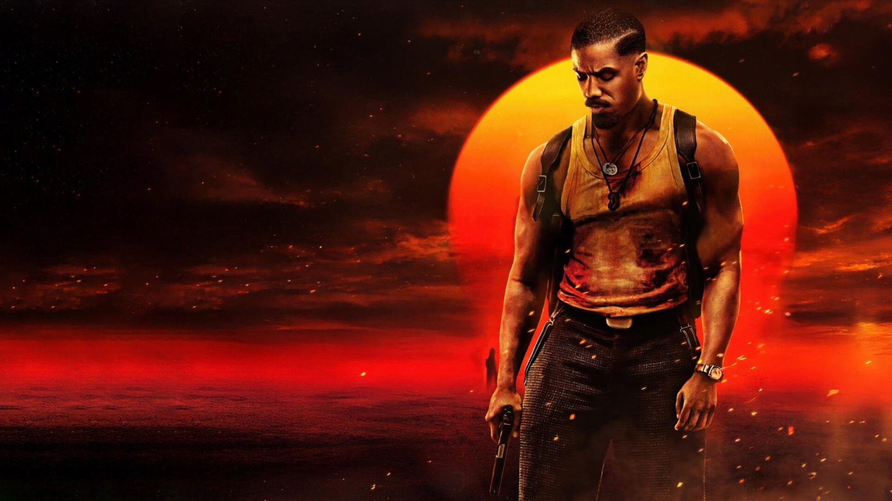
I migliori film del 2025 secondo la critica (e dove vederli)
Abbiamo messo insieme le classifiche di fine anno di centinaia di critici: ecco i dieci film più amati del 2025, da Paul Thomas Anderson a Jafar Panahi, con la piattaforma dove trovarli

Avatar: Fire and Ash
Il terzo viaggio su Pandora è il più cupo e il più spettacolare: Cameron racconta il lutto e il fuoco, Oona Chaplin regala una cattiva memorabile, ma la storia gira in tondo
Avatar: Fire and Ash: 6 curiosità sul terzo film
Dal significato del titolo al popolo della cenere nato in Papua Nuova Guinea, dalle armi tolte dalla sceneggiatura ai 48 fotogrammi al secondo: cosa c'è dietro il terzo viaggio su Pandora

Zootopia 2
Nove anni dopo, Judy e Nick tornano in fuga per una città che nasconde un passato scomodo: un sequel divertente, curatissimo e più maturo di quanto sembri

Predator: Badlands
Dan Trachtenberg mette il cacciatore al centro della storia, e ne esce un'avventura più calda e più ironica della saga, con Elle Fanning a rubare la scena

Bugonia
Due complottisti rapiscono una manager convinti che sia un'aliena. Lanthimos rifà un cult coreano e firma una satira nera, crudele e spassosa sul nostro presente

One Battle After Another
Paul Thomas Anderson porta Pynchon nell'America di oggi: un film d'azione politico, buffo e feroce, con un DiCaprio stanco e magnifico

Weapons
Diciassette bambini spariscono nella stessa notte: l'autore di Barbarian costruisce un mosaico di punti di vista che fa paura, fa ridere e non molla mai la presa

Weapons: 6 curiosità sul film di Zach Cregger
Un lutto, un'asta tra gli studi da 38 milioni, un cast cambiato in corsa. E una zia Gladys che arriva dall'infanzia del regista: cosa c'è dietro l'horror dell'anno

The Fantastic 4: First Steps
I Fantastici 4 - Gli inizi: una famiglia di supereroi in un futuro anni Sessanta, calda e curatissima, meno convincente quando arriva il momento della battaglia
Superman di James Gunn: 8 curiosità sul film
Un cane salvato che distruggeva casa, un primo ciak nel giorno del compleanno di Superman e una Fortezza della Solitudine vera: i retroscena del nuovo Superman

F1
Il regista di Top Gun: Maverick porta Brad Pitt dentro i Gran Premi veri: storia prevedibile, ma in pista si va a trecento all'ora

F1 con Brad Pitt: 7 curiosità sulle corse
Gran Premi veri, auto di Formula 2 travestite da monoposto, telecamere Apple e un garage finto in mezzo ai box delle scuderie vere

28 anni dopo: la recensione del film di Boyle
Danny Boyle e Alex Garland tornano al virus della rabbia con un film girato in buona parte con un iPhone 15 Pro Max e con un'ambizione più larga dell'horror

Dragon Trainer (2025): la recensione
Dean DeBlois rifà il suo film animato con attori veri: Sdentato è splendido, la storia quasi non cambia

Mission: Impossible - The Final Reckoning: la recensione
Tom Cruise chiude la saga con il film più lungo e più caro della serie: un sottomarino da ricordare, un'ora iniziale a tratti zavorrata

Final Destination Bloodlines: la saga ritrova la sua idea
Un prologo nel 1969, una famiglia che porta in eredità le premonizioni e l'ultimo ruolo di Tony Todd: il capitolo che rimette il gioco della morte al centro

Thunderbolts*
Una squadra di antieroi scartati, un nemico che vive nella testa delle persone e una Florence Pugh che si prende il film: il Marvel più umano degli ultimi anni
Sinners di Ryan Coogler: 8 curiosità sul film
Uno zio che amava il blues, due formati mai usati insieme e un contratto raro a Hollywood: i retroscena di Sinners

Mickey 17
Un operaio che muore e rinasce a ogni missione, un leader grottesco e un pianeta di ghiaccio: la fantascienza satirica di Bong Joon-ho diverte più di quanto graffi

Nosferatu
Robert Eggers rifà il vampiro di Murnau con una messa in scena gotica di rara bellezza: Lily-Rose Depp è il cuore del film, il mostro un po' meno, e la seconda metà perde mordente

Sonic 3: il film con Keanu Reeves, la recensione
Il terzo capitolo gioca la carta Shadow e dà a Jim Carrey un doppio ruolo. Più ambizioso dei primi due, ma sempre leggero come un film per tutta la famiglia

Nosferatu di Eggers: 6 curiosità dal set
Un progetto rimandato per quasi dieci anni, un vampiro che parla una lingua morta, una voce costruita con una cantante d'opera e un castello in Romania. Il remake di Robert Eggers raccontato da dietro le quinte, senza svelare la trama
Nessun articolo con questi filtri.